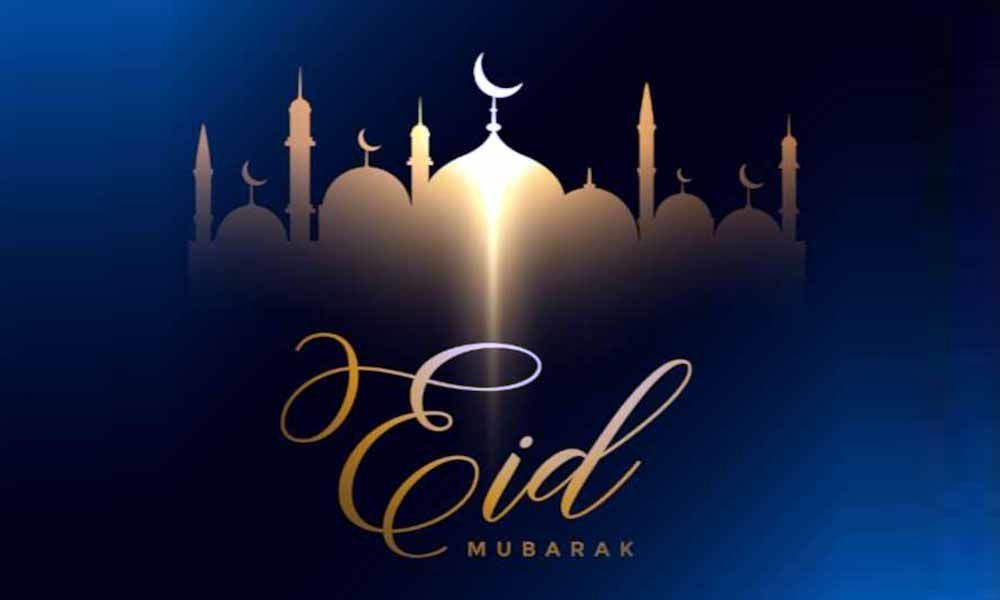

Eid-ul-Fitr
Eid-ul-Fitr marks the end of Ramadhan with celebrations. Famlies gather, share meals, exchange gifts, and pray together. the day is filled with love, blessings, and joy, strengthening relationships and spreading happiness among loved ones.
